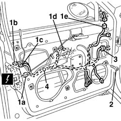

5505B10 front door wiring - r r
- Path
- Procedures > 55 ELECTRICAL EQUIPMENT > 5505 ELECTRICAL CIRCUIT FOR INSTRUMENTS/INDICATORS > 5505B door,boot and bonnet wiring. > 5505B10 front door wiring - r r
- Kind
- repair procedure (removal / refitting; the operation number is the code)
- Applies to
- all engines; all production periods
- Interactive page
- https://sloeber94.github.io/elrnDB-a156/en/#/3238384
Applies to: all engines; all production periods
 Removing
Removing
 Refitting
Refitting1. Disconnect electric connections from door lock (1a, 1b, 1c), from power window motor (1d) and from rearview mirror (1e).
 | Name | Connector |
|---|---|---|
1a | Front door lock gear motor left |
| Name | Connector |
|---|---|---|
1b | Front door lock gear motor left |
| Name | Connector |
|---|---|---|
1c | Front door lock gear motor left |
| Name | Connector |
|---|---|---|
1a | Right front door lock geared motor |
| Name | Connector |
|---|---|---|
1b | Right front door lock geared motor |
| Name | Connector |
|---|---|---|
1c | Right front door lock geared motor |
| Name | Connector |
|---|---|---|
1d | Front left electric window motor |
| Name | Connector |
|---|---|---|
1d | Front right electric window motor |
| Name | Connector |
|---|---|---|
1e | Left door mirror |
| Name | Connector |
|---|---|---|
1e | Right door mirror |
2. Unscrew lower fixing screw of glass slide to allow door wiring electric connection to come out.
3. Disconnect door wiring electric connection.
| Name | Connector |
|---|---|---|
3 | Front left door connection |
| Name | Connector |
|---|---|---|
3 | Coupling for rear/right front door |
4. Disconnect wiring stop springs from door.
5. Extract wiring from door frame.

Applies to: all engines; all production periods
Refitting
RemovingCheck wiring is not damaged and each single conductor is properly anchored to connections.
Check connections have secondary lock devices.
if necessary carry out proper continuity tests.
Insert wiring back in door compartment.
Hook wiring stop springs to door frame.
Connect electric connections.
Tighten glass slide lower fixing screw.
Test functionality of connected electric components.
Topics linked from this page (12)
- D30 Front left door connection
- D31 Coupling for rear/right front door
- N50A Front door lock gear motor left
- N50B Front door lock gear motor left
- N50C Front door lock gear motor left
- N51A Right front door lock geared motor ( FRONT PASSENGER DOOR )
- N51B Right front door lock geared motor ( FRONT PASSENGER DOOR )
- N51C Right front door lock geared motor ( FRONT PASSENGER DOOR )
- N60 Front left electric window motor
- N61 Front right electric window motor
- P60 Left door mirror
- P61 Right door mirror